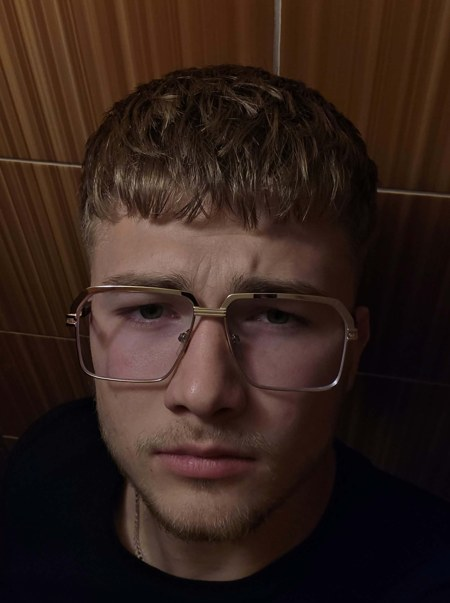

O mne
Základné informácie

Samuel Kúdela
Mám 20 rokov a pochádzam z Topoľčian. Od roku 2025 študujem na Slovenskej poľnohospodárskej univerzite v Nitre, na Fakulte ekonomiky a manažmentu, odbor Ekonomika podniku. Ekonomiku som si vybral preto, lebo ma zaujíma, ako fungujú firmy zvnútra a raz by som si chcel niečo vlastné aj sám rozbehnúť.
Predtým som chodil na strednú odbornú školu obchodu a služieb v Topoľčanoch, kde som prvýkrát pričuchol k obchodu, práci so zákazníkmi a k tomu, že nie každý deň sa dá prežiť len s úsmevom. Veľa mi to dalo hlavne čo sa týka komunikácie s ľuďmi.
Mimo školy ma najčastejšie nájdeš niekde v prírode. Rád chodím na turistiku, pravidelne cvičím v posilňovni a veľa času strávim aj pri svojom aute. Okrem toho sa sám, len tak z vlastnej zvedavosti, učím nórčinu – zatiaľ zvládnem pozdraviť a objednať si kávu.
Vzdelanie
- Základná škola, Tribečská, Topoľčany
- www.zstribecskato.sk
- Tribečská 1653/22, 955 01 Topoľčany
- 2012 – 2021
- Stredná odborná škola obchodu a služieb, Topoľčany
- sosoasto.edupage.org
- T. Vansovej 2, 955 01 Topoľčany
- 2021 – 2025
- Slovenská poľnohospodárska univerzita v Nitre, Fakulta ekonomiky a manažmentu
- www.uniag.sk
- Trieda Andreja Hlinku 2, 949 76 Nitra
- 2025 – súčasnosť
Záľuby
- turistika (hlavne Tribeč a okolie Topoľčian)
- posilňovanie
- starostlivosť o moje auto
- poľovačky s kamarátmi
- učenie sa cudzích jazykov
Viac o mojich záľubách nájdeš na podstránke Moje hoby.
Zručnosti
| Zručnosť | Úroveň | Poznámka |
|---|---|---|
| Anglický jazyk | B1 | bežná konverzácia, filmy a seriály v originále |
| Ruský jazyk | A2 | vďaka strednej škole |
| Nórsky jazyk | začiatočník | samoštúdium |
| HTML a CSS | začiatočník | táto stránka je môj prvý projekt |
| Vodičský preukaz | skupiny B, B1, AM | jazdím denne |